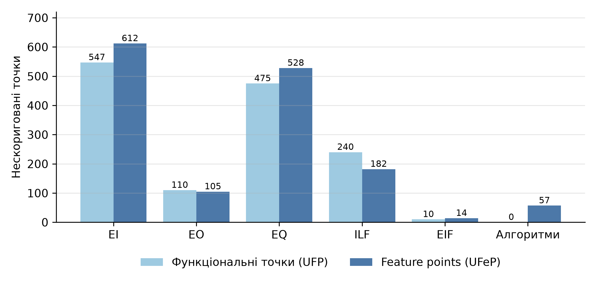
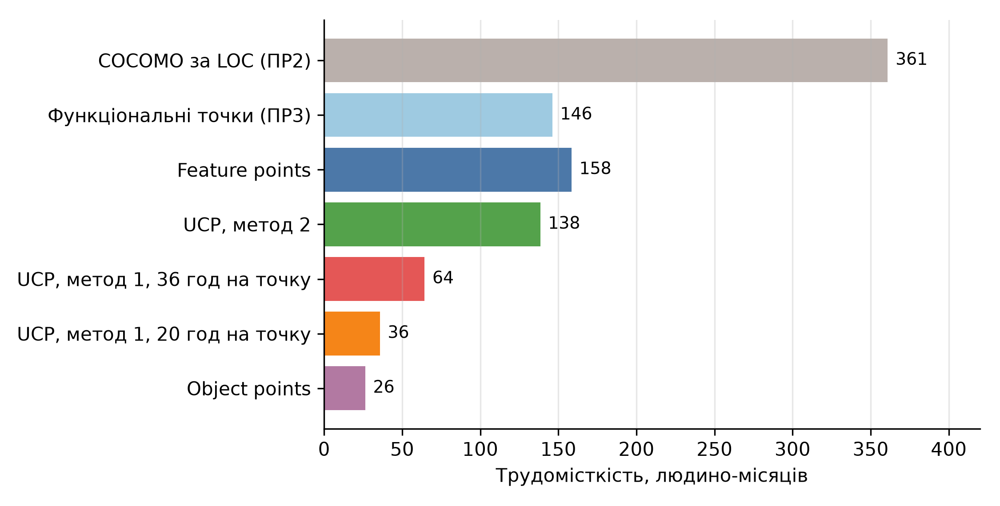

КПІ ім. Ігоря Сікорського · Практична робота № 4
Feature points, Object points і Use-case points для Shopizer
Виконав: Соколов Олександр, студент групи ІП-33
Дисципліна «Економіка IT-індустрії та підприємництво»
UFeP = 4·EI + 5·EO + 4·EQ + 7·ILF + 7·EIF + 3·ALG
AFeP = UFeP · VAF
Одна вага для компонента, без розрізнення складності. Вага алгоритму від 1 до 10, типова 3 [4, 5]
| Алгоритм | Клас або модуль |
|---|---|
| Остаточна ціна товару | PricingServiceImpl |
| Підсумок кошика | ShoppingCartCalculationServiceImpl |
| Підсумок замовлення | OrderServiceImpl |
| Розрахунок податків | TaxServiceImpl |
| Вартість доставки: вага, відстань, правила | 3 модулі доставки |
| Пакування товарів у коробки | DefaultPackagingImpl |
| Запит до UPS і USPS | UPSShippingQuote, USPSShippingQuote |
| Промокод і код доставки виробника | модулі підсумку |
| Шифрування, JWT, паролі, перевірка картки | 4 класи |
| Масштабування зображень, рейтинг, пошук | 3 класи |
Усього 19 алгоритмів, перелік – у звіті

Feature points і функціональні точки за компонентами
| Компонент | Кількість | Бали |
|---|---|---|
| Екрани: 39 простих, 13 середніх, 2 складних | 54 | 71 |
| Звіти (прості) | 21 | 42 |
| Компоненти 3GL | 23 | 230 |
| Разом OP | 343 |
Трудомісткість: 26.4 людино-місяця за PROD = 13; від 6.9 до 85.8 за PROD від 50 до 4. Повторне використання не враховано
TCF = 0.6 + 0.01 · 48.0 = 1.08
EF = 1.4 − 0.03 · 18.0 = 0.86
UCP = 308 · 1.08 · 0.86 = 286.1
13 технічних факторів, 8 факторів середовища [7]
| Варіант | Години | Людино-міс. |
|---|---|---|
| 20 год на точку | 5 721 | 35.8 |
| 36 год на точку | 10 299 | 64.4 |
| 54 варіанти, 20 год | 9 437 | 59.0 |

Трудомісткість, людино-місяців
| Метод | Вартість, $ |
|---|---|
| COCOMO за LOC | 902 364 |
| Feature points | 396 106 |
| FP (ПР3) | 366 490 |
| UCP, метод 2 | 347 188 |
| UCP, метод 1 | 89 397 – 160 915 |
| Object points | 65 962 |
Повний список – у звіті